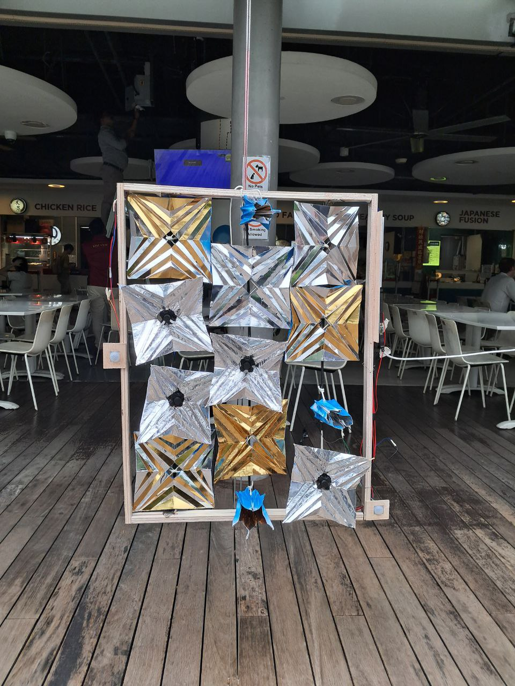
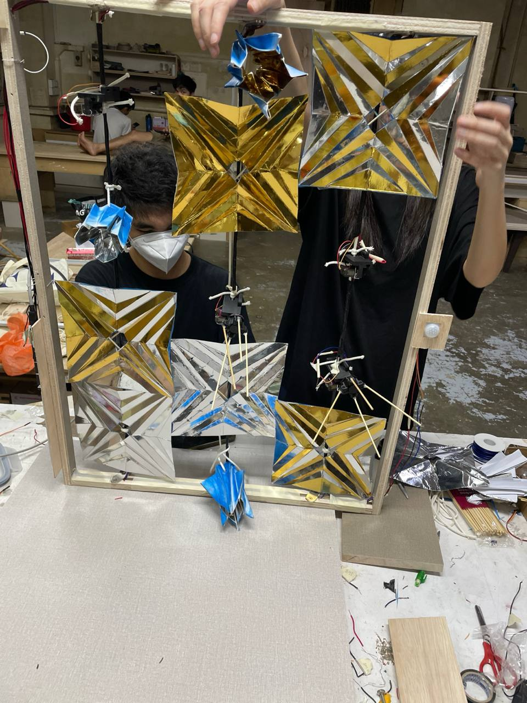

*Video editing, wiring, physical prototype and mechanisms by teammates
We were tasked with identifying a real issue within SUTD and focused on the recurring problem of birds entering the canteen and taking food. Through on-site observation and case studies, we confirmed frequent occurrences, including birds approaching food even in the presence of humans.
The project explores a non-invasive deterrence system that maintains the open-air nature of the canteen while discouraging bird entry. It uses reflective origami-based structures along the perimeter, leveraging birds' aversion to reflective and visually disruptive materials. The design ensures no harm upon contact through lightweight, soft construction.
The system is sensor-triggered, deploying or opening when bird presence is detected. Beyond function, it also acts as a potential environmental installation that transforms the perimeter into a dynamic visual display.

